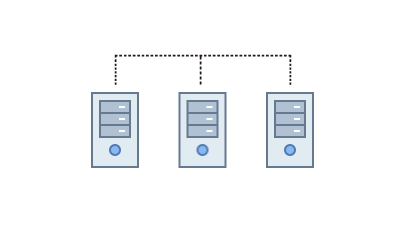
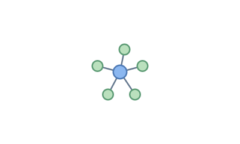
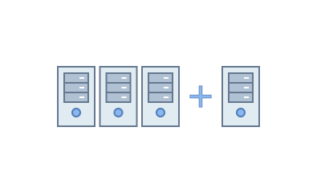
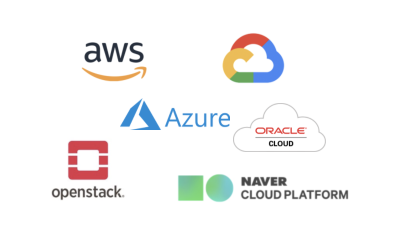

Cloud Native Platform
Turple provides everything required by cloud native environment

High Availability
Services of cloud native application must be stopless. The clustring architecture and monitoring system of Turple makes the services fault-tolerant and realiable.

Orchestration
A cloud native system contains many containers and resource. Turple manages and controls everything with health-checking, service discovery, monitoring, alerting and so on.

DevOps
DevOps is necessary to make a true cloud native service. When Turple receives a push notification from Github, the updated code is built and the new created container is automatically deployed to designated instances by Turple's CI/CD process.

Autoscale
VM instances are controlled by Turple and can be scaled in/out as required. An engineer can do the job manually by executing simple commands. However the monitoring system can also perform the scaling tasks automatically.
Monitoring & Logging
The monitoring system keeps tracks of all instances and services. The system alerts engineers when detecting abnormal conditions. All logging data are collected by ELK for system analysis.

Heterogeneous
The cloud native applications must run in all cloud environments. With Turple the application can be deployed and run in the same way wherever it is. AWS, Azure, OpenStack, Google Cloud, Naver and more are supported by Turple.